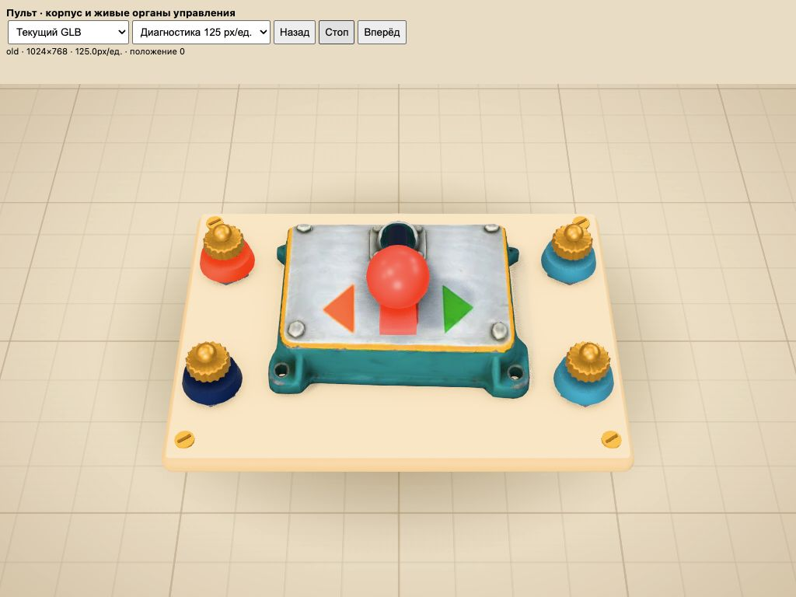
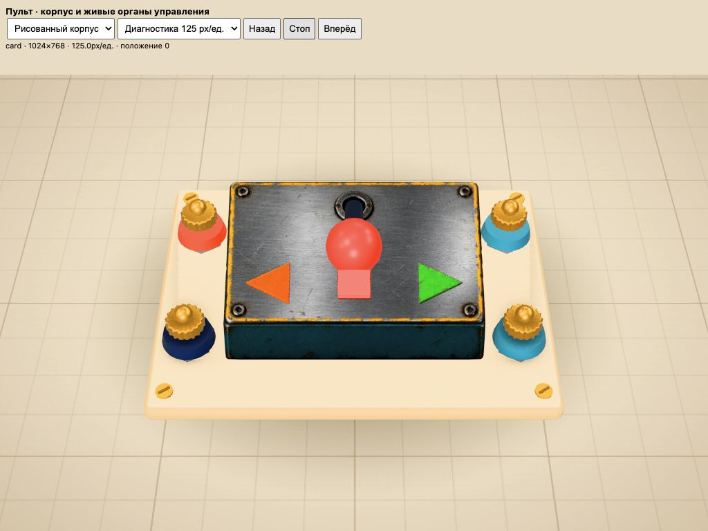
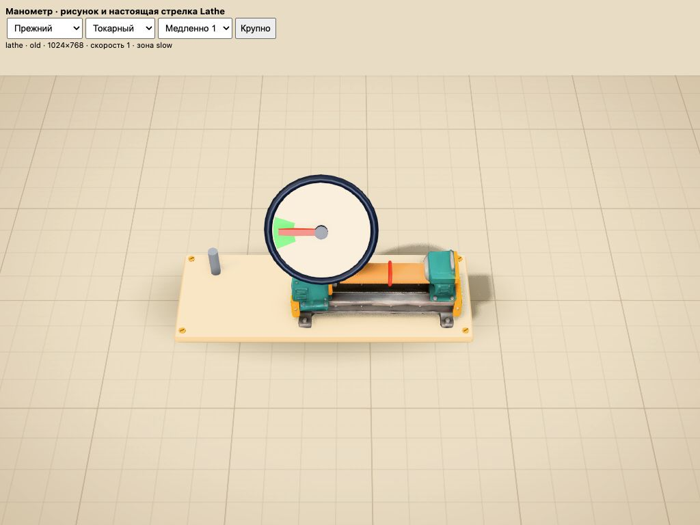
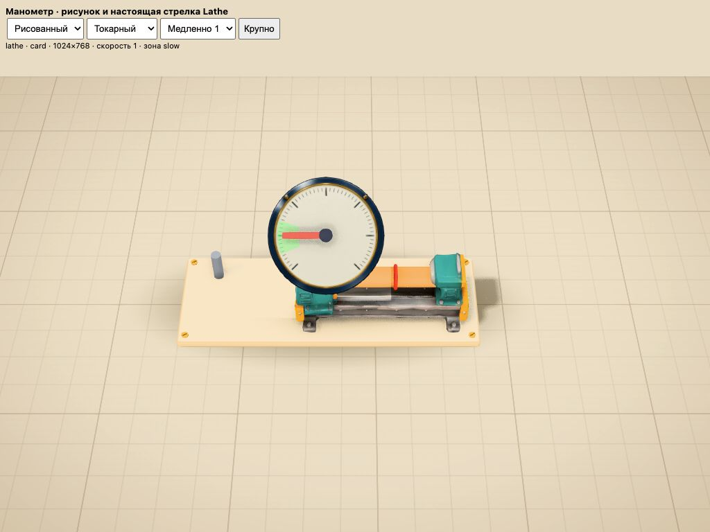

Пилот для подключения Claude. Полноразмерные кадры настоящих Reverser/Lathe в Stage. Подвижные рычаг, стрелка и зелёная зона остаются кодовыми элементами.




Пульт: три положения · Шкала: два станка и четыре скорости
Эти сцены проверяют ассеты отдельно; общий игровой ввод, полный завод и iPad ещё требуют проверки после интеграции.